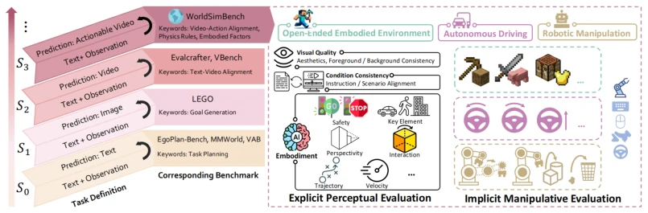
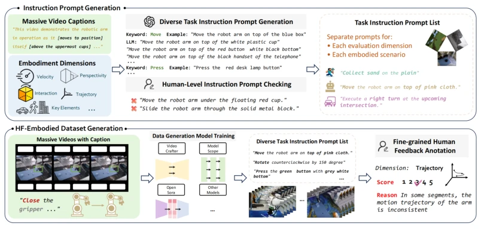
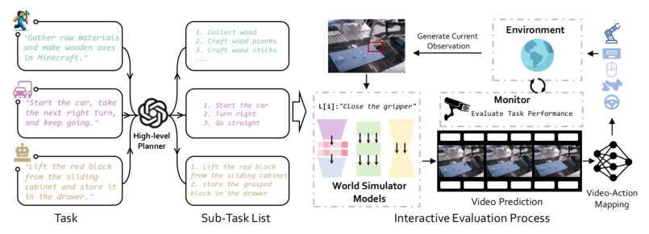
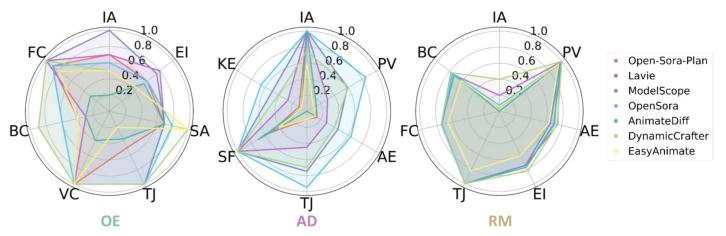
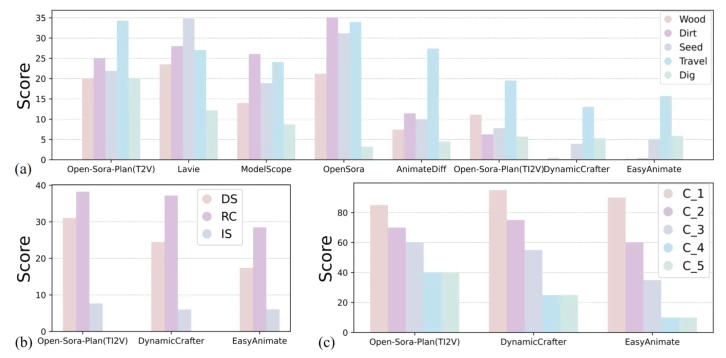
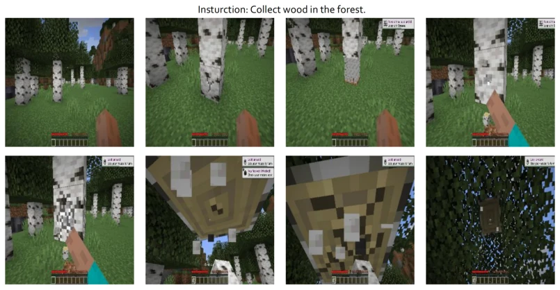
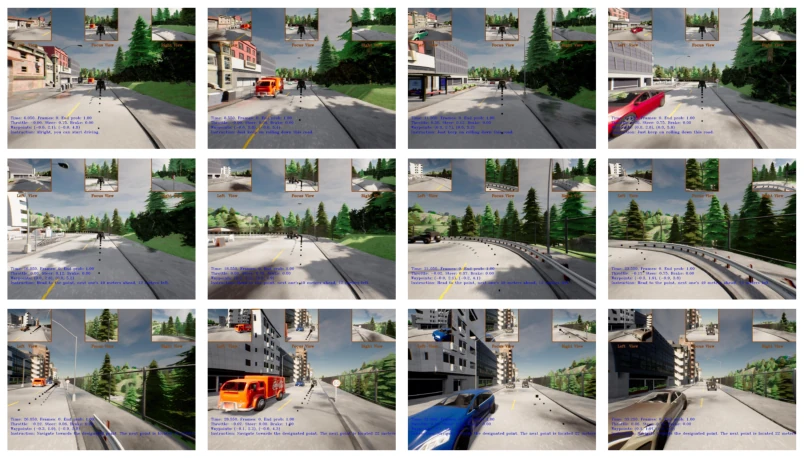
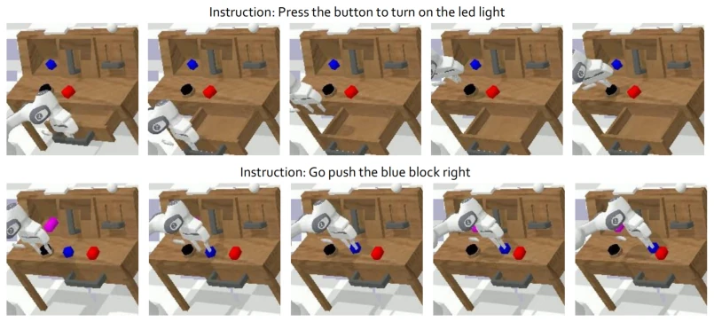

This paper attempts to put a tight rein on the overheated concept of "World Simulators". The authors do not directly boast about model capabilities, but first establish a "testing ground" called WorldSimBench. However, forcibly labeling video generation models as "World Simulators" raises suspicions of capitalizing on the trend. After all, being able to generate videos does not equal understanding physical laws, let alone controlling robots. The evaluation system is divided into two parts: one is "human eye scoring", using an HF-Embodied dataset to train an evaluator; the other is "practical drill", seeing if videos can be converted into actions in a simulator. Although the framework is quite complete, the simulation environment is after all not the real world, the S2R gap remains. Moreover, using video generation models as decision-makers, isn't this itself somewhat putting the cart before the horse? However, being able to identify the shortcomings of current models in physical consistency is still somewhat valuable.
研究动机Motivation
现有预测模型（Predictive Models）发展迅猛，但缺乏基于具身特性的分类，导致评估混乱。现有的基准测试如 AgentBench (Liu et al., 2023b) 主要关注文本规划，Vbench (Huang et al., 2024) 和 EvalCrafter (Liu et al., 2024b) 则侧重视频美学质量。这些方法无法有效评估 S3 阶段（World Simulators）的具身能力，特别是物理属性（如透视一致性、物体破坏性）和动作可行性。随着生成模型被用于驱动机器人，缺乏针对“可执行视频”的评估成为瓶颈。我们需要一个能区分 S0 到 S3 层级，并能从具身视角评估物理规则遵循度和动作转换能力的框架，以推动具身智能发展。
Existing predictive models (Predictive Models) develop rapidly, but lack classification based on embodied characteristics, leading to chaotic evaluation. Existing benchmarks such as AgentBench (Liu et al., 2023b) mainly focus on text planning, while Vbench (Huang et al., 2024) and EvalCrafter (Liu et al., 2024b) focus on video aesthetic quality. These methods cannot effectively evaluate the embodied capabilities of the S3 stage (World Simulators), especially physical attributes (such as perspective consistency, object destructibility) and action feasibility. As generative models are used to drive robots, the lack of evaluation for "executable videos" becomes a bottleneck. We need a framework that can distinguish S0 to S3 levels, and evaluate physical rule adherence and action conversion capabilities from an embodied perspective, to promote the development of embodied intelligence.
方法Method
整体框架分为预测模型层级定义和 WorldSimBench 双轨评测。层级从 S0（文本）到 S3（可行动视频），S3 模型需整合 3D 场景理解与物理规则先验。评测包含显式感知评估和隐式操作评估。显式评估构建 HF-Embodied 数据集（35,701 条），包含细粒度人类反馈，训练 Human Preference Evaluator (HPE) 基于 Flash-VStream (Zhang et al., 2024a) 微调，使用 LoRA (Hu et al., 2021) 对齐人类感知，输出多维度评分。隐式评估在 MineRL、CARLA (Dosovitskiy et al., 2017)、CALVIN (Mees et al., 2022) 三个仿真环境中，利用预训练 Video-to-Action 模型将生成的视频转化为控制信号，通过闭环任务成功率评估。三个场景涵盖开放环境、自动驾驶和机械臂操作，分别对应不同的物理交互需求。
The overall framework is divided into predictive model level definitions and WorldSimBench dual-track evaluation. Levels range from S0 (text) to S3 (actionable video), S3 models need to integrate 3D scene understanding and physical rule priors. Evaluation includes explicit perception evaluation and implicit operation evaluation. Explicit evaluation constructs the HF-Embodied dataset (35,701 entries), containing fine-grained human feedback, training Human Preference Evaluator (HPE) by fine-tuning Flash-VStream (Zhang et al., 2024a), using LoRA (Hu et al., 2021) to align human perception, outputting multi-dimensional scores. Implicit evaluation in MineRL, CARLA (Dosovitskiy et al., 2017), CALVIN (Mees et al., 2022) three simulation environments, utilizing pre-trained Video-to-Action models to convert generated videos into control signals, evaluating through closed-loop task success rate. Three scenarios cover open environments, autonomous driving, and robotic arm operations, corresponding to different physical interaction needs respectively.

Figure 1: Overview of the hierarchical capabilities of the Predictive Models. Models at higher stages demonstrate more advanced capabilities. We take the initial step in evaluating Predictive Gen- erative Models up to the S3 stage, known as World Simulators, by introducing a parallel evaluation framework, WorldSimBench. WorldSimBench assesses the models both Explicit Perceptual Evalu- ation and Implicit Manipulative Evaluation, focusing on video generation and action transformation across three critical embodied scenarios.

Figure 2: Overview of Explicit Perceptual Evaluation. (Top) Instruction Prompt Generation. We use a large collection of video captions from the internet and our predefined embodied evaluation dimensions. These are expanded using GPT and manually verified to create a corresponding Task Instruction Prompt List for data generation and evaluation. (Bottom) HF-Embodied Dataset Gen- eration. Massive internet-sourced embodied videos with captions are used to train data generation models. Fine-grained Human Feedback Annotation is then applied to the embodied videos accord- ing to the corresponding Task Instruction Prompt List, covering multiple embodied dimensions.

Figure 3: Overview of Implicit Manipulative Evaluation. Embodied tasks in different scenarios are decomposed into executable sub-tasks. The video generation model generates corresponding predicted videos based on the current instructions and real-time observations. Using a pre-trained IDM or a goal-based policy, the agent executes the generated sequence of actions. After a fixed timestep, the predicted video is refreshed by sampling again from the video generation model, and this process repeats. Finally, the success rates of various embodied tasks are obtained through mon- itors in the simulation environment.
Tested 8 video generation models, including Open-Sora-Plan and Lavie, etc. Explicit evaluation metrics are average scores per dimension, implicit evaluation are task success rate, PLCC, etc. HPE is superior to GPT-4o in human preference alignment (Table 3), proving its generalization ability. Results show that current models struggle to generate reasonable object deformation in OE scenarios, lack 3D depth sense in AD scenarios, and have poor instruction alignment in RM scenarios. Explicit and implicit evaluation results are generally consistent, but in long sequence tasks, implicit evaluation better reflects robustness. Open-Sora-Plan performs well in trajectory generation, but overall physical rule capture is still insufficient, indicating that video generation models still have a gap from true world simulators.

Figure 4: Result of Explicit Perceptual Evaluation aross three embodied scenarios. Scores in each embodied scenario are normalized to 0-1. The abbreviations are listed in Tab. 2.

Figure 5: Result of Implicit Manipulative Evaluation aross three embodied scenarios.The ab- breviations are listed in Sec. 4.2.2.
其他图片Other Figures

Figure 7: Rollout of Open-Ended Embodied Environment in Implicit Manipulative Evaluation.

Figure 8: Rollout of Autonomous Driving in Implicit Manipulative Evaluation.

Figure 9: Rollout of Robot Manipulation in Implicit Manipulative Evaluation.